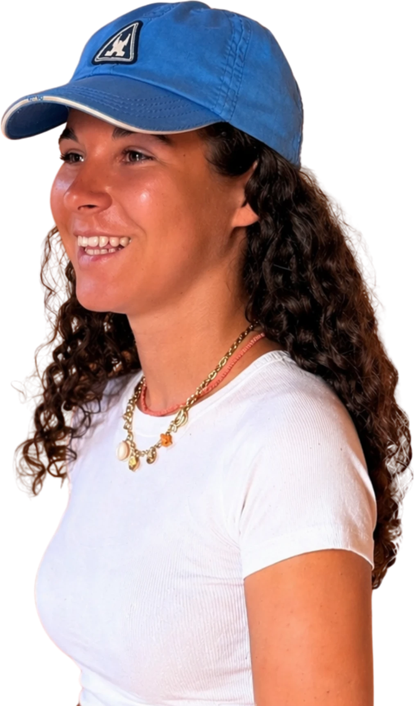

Hello ! Moi c'est
Camille Chesneau
Alternante en communication et événementiel

Qui suis-je
J'ai 20 ans et je suis étudiante en MBA communication et événementiel à l'ISEG Nantes. En alternance au MEDEF Loire-Atlantique, je travaille au sein du pôle communication événementiel.
Alternante au pôle communication événementiel.
MBA communication et événementiel.

Mon parcours
Depuis 2026
Alternance au MEDEF Loire-Atlantique
Pôle communication et événementiel :
- Je travaille en collaboration avec les chargés de communication et d'événements, en étant pleinement intégrée à l'équipe.
- Je réalise des contenus pour différents supports (réseaux sociaux, emails, plaquettes, site internet).
- Je capture des photos et vidéos et crée des visuels.
- Je participe à la conception et à l'organisation des événements.
Depuis 2026
MBA communication et événementiel, ISEG Nantes
2023 à 2026
Bachelor en communication, marketing et événementiel, ISEG Nantes
Majeure création.
2023
Bac STMG à Saint-Dominique
Option marketing.
Mes réalisations
1 sur 6


Mes compétences
Évènements
Rétroplanning, budget, prestataires, logistique et accueil des participants, de l'idée au jour J.
Réseaux sociaux
Ligne éditoriale, calendrier de publication, création de contenus et suivi des statistiques.
Rédaction
Posts, newsletters, communiqués et invitations, avec le bon ton pour chaque public.
Création visuelle
Affiches, visuels pour les réseaux, kakémonos et supports print.
Relations et partenariats
Échanges avec les adhérents, intervenants, partenaires et prestataires.
Mes outils
du quotidien


Contactez-moi !
- Emailcamillechsne@gmail.com
- LinkedInCamille Chesneau
- Basée àNantes, Loire-Atlantique